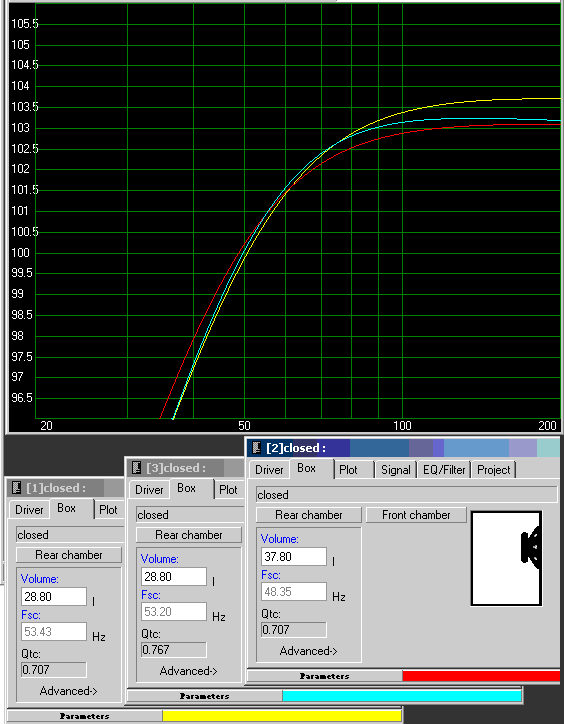
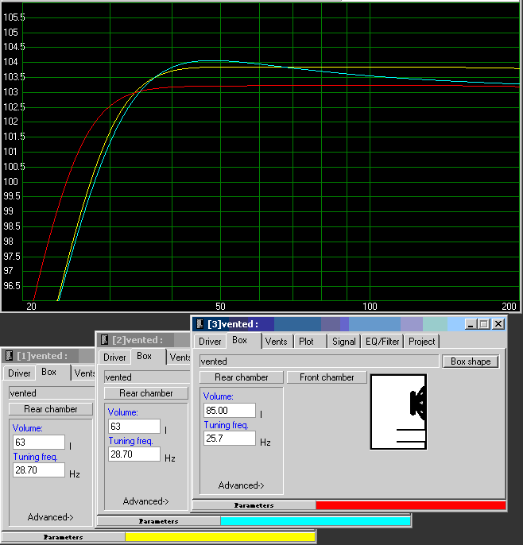
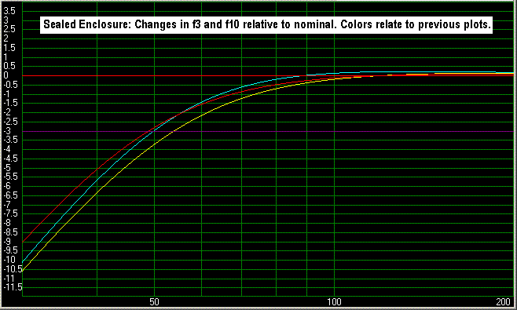
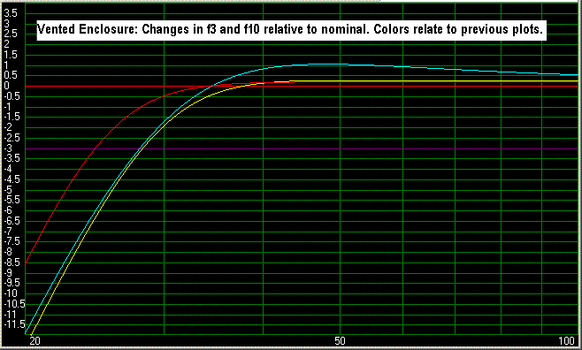

Articles of dubious veracity and merit
Electrical Factors affecting system impedance -And their consequences on system Q
When it comes to designing woofer enclosures, the necessity to increase the volume of enclosures due to the intrusions of drivers, vents, and bracing are well known, and generally compensated for. A less considered concern may be the effects of additional electrical impedance to the system. This increased impedance is due to several factors, including the source and cable impedance, impedance of the crossover, and thermal effects, and is the focus of this article.
The Math: Any change in series impedance affects the Qes of the driver, and consequently Qts, which of course is one of the factors used to calculate the optimum enclosure size. The Qes + additional impedance, Qes' is calculated using the formula: Qes' = [(Rg + Re) / Re] * Qes
Where:
Re is the DC resistance of the driver Rg is the additional impedance Qes is the Electrical Q of the driver Qts' the new total Q of the driver can then be found by: Qts' = (Qes' * Qms) / (Qes' + Qms)
Where Qms is the Mechanical Q of the driver. For the purposes of this article, the additional impedance will be expressed as scalar quantities rather than their complex impedance.
The output impedance of the source amplifier is the first factor affecting Qe. For a tube amplifier, this can be as much as several ohms. Solid state amps on the other hand will are typically a small fraction of an ohm. A source impedance of 0.1 ohms will be assumed for the purposes of this discussion, and was included in all of the following plots.
Speaker cable and interconnect impedance can also be of some minor concern. The resistance of the cable itself may range from 0.016 to 0.1 ohm typically for a 10 foot length of 12 to 20 gauge wire respectively. While this is pretty insignificant, the connections at the terminations, speaker, crossover and driver will all add some small resistance. For this exercise, 0.1 ohm will be assumed as a nominal value.
Passive crossover insertion losses:The DCR of the inductors can significantly increase the series impedance. This of course will vary depending on the gauge, length of wire in the inductor, and core material. I'll suggest 0.4 ohms as an average value for a woofer in a 3 way system.
The increase in voice coil resistance with temperature. I have to thank Keith Howard for his article in the November 2006 issue of Stereophile as the stimulus to write this treatise. While he tested only one speaker, I suspect his results are reasonably representative of a well-designed driver. I found several things interesting in his study. One is that the bulk of the increase in voice coil temperature occurred rather quickly, within 30 seconds or so. Another was the tweeter was relatively immune to thermal effects. Most significant was with the woofer tested, the voice coil only increased 36 degrees, which resulted in an 8% increase in Re. The author dismissed this small increase in Re as insignificant, but I suggest that if it is not considered, along with the other factors I've noted previously, it can make a discernible difference in the optimum calculated enclosure volume.
Sealed enclosures:
In the plot below, I've modeled the RS225-8 driver. The yellow curve is the modeled response of the driver assuming only 0.1 ohm Rg for the source amp. The Qa was set at 15, indicating a reasonably heavy stuffing, and the enclosure was adjusted to result in a modeled Qtc of 0.707, or 28.8 liters. Now I increased Rg to add the cable resistance, the DCR of the inductor, and the voice coil heating effects. For the purposes of this example, I assumed 0.4 ohm, which is about a 6% increase in Re, rather than the 8% of the Stereophile article. Taking all the factors in account, this adds another 0.9 ohms to the series resistance. The result is the cyan curve. Now the modeled Qtc has increased to 0.767, and resulted in roughly a 0.5 dB loss above 75 Hz. To retain a .707 Qtc under these conditions the box enclosure would need to be increased to 37.8 liters, or over 30% larger. -But with the extra volume comes a 5 Hz extension in f3. This is shown in the red curve.
Vented Enclosures:
Adding the additional impedance to the RS225 in a vented design result in more significant changes. Once again the red curve is the modeled response with 0.1 ohm Rg. The cyan curve is with the total series resistance increased to 1 ohm. Note that the ripple is now nearly 1 dB and 0.5 dB less sensitive than with the ideal model. The red curve is the result of increasing the box volume from 63 liters to 85 liters, a 35% increase, and reducing the tuning frequency from 28.7 Hz to 25.7 Hz. Happily, this also results in about a 4 Hz extension in f3.
Other observations:The change in voice coil impedance will also negatively impact the expected response of the LP and zobel circuits, increasing the crossover frequency, reducing the effectiveness of the zobel, and may result in audible peaking around the crossover frequency. The tweeter, in most home applications, will be relatively unaffected by thermal issues, due both to the relatively low power applied in its passband, and the use of ferrofluid, aluminum formers, etc.. However, should increased voice coil impedance occur, it will lower the crossover frequency of the HP, and increase the peak in the summed response at the crossover frequency. The tweeter may also end up sounding bright at higher SPL, due to the loss of sensitivity of the mid and woofer. This may partially explain why some prefer the tweeters slightly rolled off from flat. Amplifiers with relatively high impedance outputs of more than an ohm are going to exacerbate all the negative issues mentioned above. In addition, drivers other than woofers may be affected by the reduction in damping. The addition of series resistance will result in a lower f3, which in some cases will offset the required increase in enclosure size.
Changes in f3 and f10:The two plots below show the same plots as before, but nominalized to compensate for the differences in output due to the impedance change. These delineate the possible improvement in low end extension due to the change in Qts. -If the increase in impedance is taken into account. About a 5 Hz extension in both f3 and f10 for the sealed design The vented enclosure models with a 4 Hz extension in f3, and a 3 Hz extension in f10. Note that the output at 20 Hz is nearly 4 dB higher than if the increased impedance was not taken into account.
 Conclusion: The factors resulting in additional series resistance can cause a significant change in the box Q, and an equally significant difference in the size of the enclosure to obtain the intended box Q. This, at least in home speakers, will only be an issue when the driver passband includes the compliance controlled region, or output is expected at and below fc. In most applications, this will be limited to woofers, although the loss of sensitivity may be felt by the midrange to some extent as well. The 8% increase measured in the Stereophile article, was based on the measurement of one high end speaker, and may represent exceptional driver thermal properties, not necessarily those of the average driver. Certainly I've seen other articles suggest much higher increases in temperature, but I've not seen actual data to back up these claims. In any case, it is clear that some compensation for the thermal effects should be made in the design process to obtain optimum system performance.